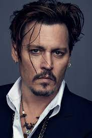

Biography - Johnny Depp
Johnny Depp is perhaps one of the most versatile actors of his day and age in Hollywood.
He was born John Christopher Depp II in Owensboro, Kentucky, on June 9, 1963, to Betty Sue (Wells), who
worked as a
waitress, and John Christopher Depp, a civil engineer.
Depp was raised in Florida. He dropped out of school when he was 15, and fronted a series of
music-garage bands,
including one named 'The Kids'. When he married Lori Anne Allison (Lori A. Depp) he took a job as a
ballpoint-pen
salesman to support himself and his wife. A visit to Los Angeles, California, with his wife, however,
happened to be
a blessing in disguise, when he met up with actor Nicolas Cage, who advised him to turn to acting, which
culminated
in Depp's film debut in the low-budget horror film, A Nightmare on Elm Street (1984), where he played a
teenager who
falls prey to dream-stalking demon Freddy Krueger.
In 1987 he shot to stardom when he replaced Jeff Yagher in the role of undercover cop Tommy Hanson in
the popular TV
series 21 Jump Street (1987).
In 1990, after numerous roles in teen-oriented films, his first of a handful of great collaborations
with director
Tim Burton came about when Depp played the title role in Edward Scissorhands (1990). Following the
film's success,
Depp carved a niche for himself as a serious, somewhat dark, idiosyncratic performer, consistently
selecting roles
that surprised critics and audiences alike. He continued to gain critical acclaim and increasing
popularity by
appearing in many features before re-joining with Burton in the lead role of Ed Wood (1994). In 1997 he
played an
undercover FBI agent in the fact-based film Donnie Brasco (1997), opposite Al Pacino; in 1998 he
appeared in Fear
and Loathing in Las Vegas (1998), directed by Terry Gilliam; and then, in 1999, he appeared in the
sci-fi/horror
film The Astronaut's Wife (1999). The same year he teamed up again with Burton in Sleepy Hollow (1999),
brilliantly
portraying Ichabod Crane.
Depp has played many characters in his career, including another fact-based one, Insp. Fred Abberline in
From Hell
(2001). He stole the show from screen greats such as Antonio Banderas in the finale to Robert
Rodriguez's "mariachi"
trilogy, Once Upon a Time in Mexico (2003). In that same year he starred in the marvelous family
blockbuster Pirates
of the Caribbean: The Curse of the Black Pearl (2003), playing a character that only the likes of Depp
could pull
off: the charming, conniving and roguish Capt. Jack Sparrow. The film's enormous success has opened
several doors
for his career and included an Oscar nomination. He appeared as the central character in the Stephen
King-based
movie, Secret Window (2004); as the kind-hearted novelist James Barrie in the factually-based Finding
Neverland
(2004), where he co-starred with Kate Winslet; and Rochester in the British film, The Libertine (2004).
Depp
collaborated again with Burton in a screen adaptation of Roald Dahl's novel, Charlie and the Chocolate
Factory
(2005), and later in Alice in Wonderland (2010) and Dark Shadows (2012).
Off-screen, Depp has dated several female celebrities, and has been engaged to Sherilyn Fenn, Jennifer
Grey, Winona
Ryder and Kate Moss. He was married to Lori Anne Allison in 1983, but divorced her in 1985. Depp has two
children
with French singer/actress Vanessa Paradis: Lily-Rose Melody, born in 1999 and Jack, born in 2002. He
married
actress/producer Amber Heard in 2015
John Christopher Depp II was born on June 9, 1963, in Owensboro, Kentucky,[4][5][6] the youngest of four
children of waitress Betty Sue Palmer (née Wells)[7] and civil engineer John Christopher Depp.[8][9]
Depp's
family moved frequently during his childhood, eventually settling in Miramar, Florida in 1970.[10] His
parents divorced in 1978 when he was 15,[10][11] and his mother later married Robert Palmer, whom Depp
has
called "an inspiration".[12][13]
Depp was gifted a guitar by his mother when he was 12 years old, and began playing in various bands.[10]
He
dropped out of Miramar High School aged 16 in 1979 to become a rock musician. He attempted to go back to
school two weeks later, but the principal told him to follow his dream of being a musician.[10] In 1980,
Depp began playing guitar in a band called The Kids. After modest local success in Florida, the band
moved
to Los Angeles in pursuit of a record deal, changing their name to Six Gun Method. In addition to the
band,
Depp worked a variety of odd jobs, such as in telemarketing. In December 1983, Depp married make-up
artist
Lori Anne Allison,[5] the sister of his band's bassist and singer. The Kids split up before signing a
record
deal in 1984, and Depp subsequently began collaborating with the band Rock City Angels.[14] He co-wrote
their song "Mary", which appeared on their debut Geffen Records album Young Man's Blues.[15] Depp and
Allison divorced in 1985.
Depp is primarily of English descent, with some French, German, and Irish ancestry.[16] His surname
comes
from a French Huguenot immigrant (Pierre Dieppe, who settled in Virginia around 1700). He is also
descended
from colonial freedom fighter Elizabeth Key Grinstead (1630–1665), daughter of English planter and
member of
the Virginia House of Burgesses Thomas Key and an African woman that he enslaved.[17][18][19] In
interviews
in 2002 and 2011, Depp claimed to have Native American ancestry, stating, "I guess I have some Native
American somewhere down the line. My great-grandmother was quite a bit of Native American, she grew up
Cherokee or maybe Creek Indian. Makes sense in terms of coming from Kentucky, which is rife with
Cherokee
and Creek Indian."[20][21][22] Depp's claims came under scrutiny when Indian Country Today stated that
Depp
had never inquired about his heritage nor was he recognized as a member of the Cherokee Nation.[23] This
led
to criticism from the Native American community, as Depp has no documented Native ancestry,[23] and
Native
community leaders refer to him as "a non-Indian".[23][24] Depp's choice to portray Tonto, a Native
American
character, in The Lone Ranger was criticized,[23][24] along with his choice to name his rock band
"Tonto's
Giant Nuts".[25][26][27][28] During the promotion for The Lone Ranger, Depp was adopted as an honorary
son
by LaDonna Harris, a member of the Comanche Nation, making him an honorary member of her family but not
a
member of any tribe.[29] Critical response to his claims from the Native community increased after this,
including satirical portrayals of Depp by Native comedians.[26][27][28] An ad featuring Depp and Native
American imagery, by Dior for the fragrance "Sauvage", was pulled in 2019 after being accused of
cultural
appropriation and racism
|
Johnny Depp
|
|
|---|---|
|

Depp at the 2020 Berlin International Film
Festival
|
|
| Born |
John Christopher Depp II June 9, 1963 |
| Occupation |
|
| Years active | 1984–present |
|
Works
|
Full list |
| Spouse(s) |
|
| Partner(s) | Vanessa
Paradis (1998–2012) |
| Children | 2, including Lily-Rose |
| Awards | Full list |
| Musical career | |
| Genres | |
| Instruments | Guitar |
| Labels | |
| Associated acts | |
| Signature | |
 |
|